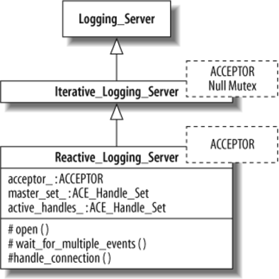
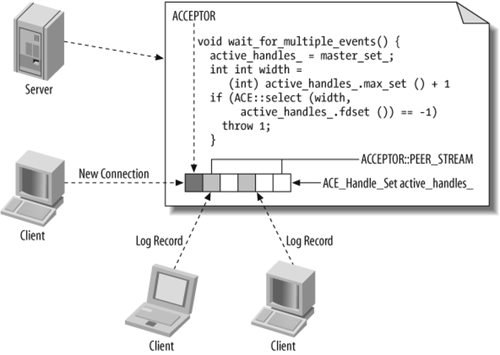
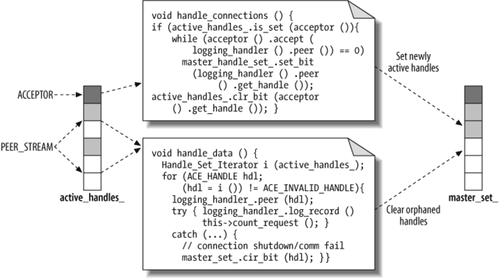

26.3. Implementing Sequential Logging Servers
This section demonstrates the implementation of logging servers that feature sequential concurrency models—i.e., all processing is performed in a single thread. We cover both iterative and reactive implementations of sequential logging servers.
26.3.1. An Iterative Logging Server
Iterative servers process all log records from each client before handling any log records from the next client. Since there is no need to spawn or synchronize threads, we use the Null_Mutex facade to parameterize the Iterative_Logging_Server subclass template, as follows:
template <typename ACCEPTOR>
class Iterative_Logging_Server :
virtual Logging_Server<ACCEPTOR, Null_Mutex> {
public:
typedef Logging_Server<ACCEPTOR, Null_Mutex>::HANDLER HANDLER;
Iterative_Logging_Server (int argc, char *argv[]);
protected:
virtual void open (void);
virtual void wait_for_multiple_events (void) {};
virtual void handle_connections (void);
virtual void handle_data
(typename ACCEPTOR::PEER_STREAM *stream = 0);
HANDLER log_handler_;
// One log file shared by all clients.
std::ofstream logfile_;
};
Implementing this version of our server is straightforward. The open( ) method decorates the behavior of the method from the Logging_Server base class by opening an output file before delegating to the parent's open( ), as follows:
template <typename ACCEPTOR> void
Interative_Logging_Server<ACCEPTOR>::open (void) {
logfile_.open (filename_.c_str ());
if (!logfile_.good ()) throw std::runtime_error;
// Delegate to the parent's open() method.
Logging_Server<ACCEPTOR, Null_Mutex>::open ();
}
The wait_for_multiple_events( ) method is a no-op. It is not needed because we just handle a single connection at any one time. The handle_connections( ) method therefore simply blocks until a new connection is established, as follows:
template <typename ACCEPTOR> void
Iterative_Logging_Server<ACCEPTOR>::handle_connections (void)
{ acceptor_.accept (log_handler_.peer ()); }
Finally, handle_data( ) simply reads log records from the client and writes them to the log-file until the client closes the connection or an error occurs:
template <typename ACCEPTOR> void
Iterative_Logging_Server<ACCEPTOR>::handle_data (void) {
while (log_handler_.log_record (logfile _))
count_request ();
}
While the iterative server is straightforward to implement, it suffers from the drawback of being able to service only one client at a time. A second client that attempts to connect may time out while waiting for the first to finish its request.
26.3.2. A Reactive Logging Server
The reactive logging server alleviates one of the primary drawbacks with the iterative logging server in the previous section by processing multiple client connections and log record requests via operating system synchronous event demultiplexing APIs provided by the OS, such as select( ) and WaitForMultipleObjects( ). These APIs can monitor multiple clients by waiting in a single thread of control for I/O-related events to occur on a group of I/O handles, and then interleave the processing of log records. Since a reactive logging server is still fundamentally sequential, however, it inherits from the iterative logging server implemented earlier, as shown in Figure 26-7.
Figure 26-7. Reactive logging server interface
The Reactive_Logging_Server class overrides all four hook methods that it inherits from base class Iterative_Logging_Server. Its open( ) hook method decorates the behavior of the base class method to initialize the ACE_Handle_Set member variables, which are part of the wrapper facades that simplify the use of select( ), as shown here:
template <typename ACCEPTOR> void
Reactive_Logging_Server<ACCEPTOR>::open () {
// Delegate to base class.
Iterative_Logging_Server<ACCEPTOR>::open ();
// Mark the handle associated with the acceptor as active.
master_set_.set_bit (acceptor_.get_handle ());
// Set the acceptor's handle into non-blocking mode.
acceptor_.enable (NONBLOCK);
}
The wait_for_multiple_events( ) method is needed in this implementation, unlike its counterpart in Iterative_Server. As shown in Figure 26-8, this method uses a synchronous event demultiplexer (in this case, the select( ) call) to detect which I/O handles have connection or data activity pending.
Figure 26-8. Using an asynchronous event demultiplexer in the Reactive_Logging_Server program
After wait_for_multiple_events( ) has executed, the Reactive_Logging_Server has a cached set of handles with pending activity (i.e., either new connection requests or new incoming data events), which will then be handled by its other two hook methods: handle_data( ) and handle_connections( ). The handle_connections( ) method checks whether the acceptors handle is active and, if so, accepts as many connections as possible and caches them in the master_handle_set_. Similarly, the handle_data( ) method iterates over the remaining active handles marked by select( ) earlier. This activity is simplified by the ACE socket wrapper facade that implements an instance of the Iterator pattern [ ]for socket handle sets, as shown in Figure 26-9.
]for socket handle sets, as shown in Figure 26-9.
[
The following code implements a Reactive_Logging_Server main program that uses the socket API:
int main (int argc, char *argv[]) {
Reactive_Logging_Server<SOCK_Acceptor> server (argc, argv);
server.run ();
return 0;
}
Figure 26-9. Reactive server connection/data event handling
The first line of our main function parameterizes the Reactive_Logging_Server with the SOCK_Acceptor type, which will cause the C++ compiler to generate code for a reactive logging server that is able to communicate over sockets. This will, in turn, parameterize its Logging_Server base class with both the SOCK_Acceptor and Null Mutex, by virtue of the hard-coded template argument provided when we inherited from it. The second line calls the run( ) template method, which is delegated to the Logging_Server base class, which itself delegates to the various hook methods we implemented in this class.
26.3.3. Evaluating the Sequential Logging Server Solutions
The Reactive_Logging_Server improves upon the Iterative_Logging_Server by interleaving its servicing of multiple clients, rather than just handling one client in its entirety at a time. It does not take advantage of OS concurrency mechanisms, however, so it cannot leverage multiprocessors effectively. Nor can it overlap computation and communication by processing log records while reading new records. These limitations impede its scalability as the number of clients increases, even if the underlying hardware supports multiple simultaneous threads of execution.
Although Iterative_Logging_Server and Reactive_Logging_Server run only in a single thread of control—and are thus not scalable for most production systems—their simplicity high-lights several more beautiful aspects of our OO framework-based design:
-
Our use of hook methods in the Logging_Server::run( ) template method shields application developers from low-level details—e.g., how a logging server performs IPC and event demulxiplexing operations—thereby enabling the developers to focus on domain-specific application logic by leveraging the expertise of framework designers.
-
Our use of wrapper facades allows us to lock/unlock mutexes, listen on a particular IPC mechanism to accept new connections, and wait for multiple I/O events concisely, efficiently, and portably. Without these useful abstractions, we would have had to write many lines of tedious and error-prone code that would be hard to understand, debug, and evolve.
The benefits from these abstractions become more apparent with more complex concurrent logging servers shown next, as well as with more complex framework use cases, such as graphical user interfaces [ ]or communication middleware. [§§§]
]or communication middleware. [§§§]
[
[§§§] Schmidt et al., op. cit.